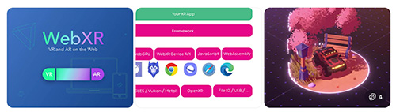
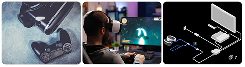

Choose from the following platforms as a way to present your XR project for your XR project workflow;
Mobile: A mobile app platform delivers XR experiences through smartphones or tablets. This is the most accessible option for users and is widely used for AR applications in retail, education, and marketing. In the workflow, choosing mobile prioritises ease of access, lower hardware requirements, and broader audience reach.  Web browser:: A web browser platform allows XR experiences to run directly in a browser without requiring downloads. This is often achieved through WebXR technologies. In the workflow, this option supports quick distribution and accessibility, making it ideal for sharing prototypes or public-facing experiences. Headset: A headset platform delivers immersive XR experiences through dedicated devices such as VR or MR headsets. This allows for deeper interaction and higher levels of immersion. In the workflow, this option requires more advanced development, hardware consideration, and optimisation, but enables the most immersive experiences.  Games console: A games console platform delivers XR experiences through console systems, often combined with VR hardware. This is commonly used for gaming and entertainment experiences. In the workflow, this option supports high-performance, polished experiences, but may involve stricter development requirements and platform limitations.

